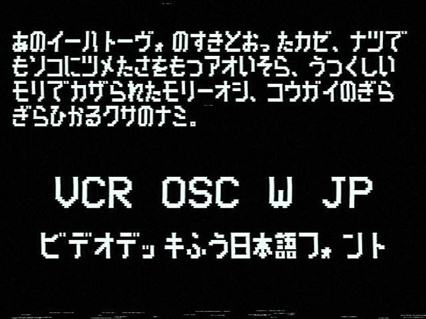
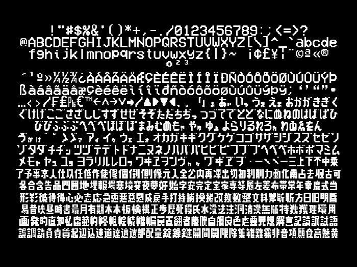

こちらのページはVCR OSD Monoの日本語込みバージョンのフォント、VCR OSD W JPの配布ページとなります。
VCR OSD W JPは古いテレビに映っているフォントをベースのコンセプトとするVCR OSD Monoの改変版です。ゲームや絵などに埋め込むことができます。

ひらがな カタカナ 一部漢字
制限は特にありません。有料で再配布したりしなければ改変するなどOKです。
ゲームに埋め込むなどお好きにどうぞ
元フォント:VCR OSD Mono
フォント改変:Tottu_1280
none